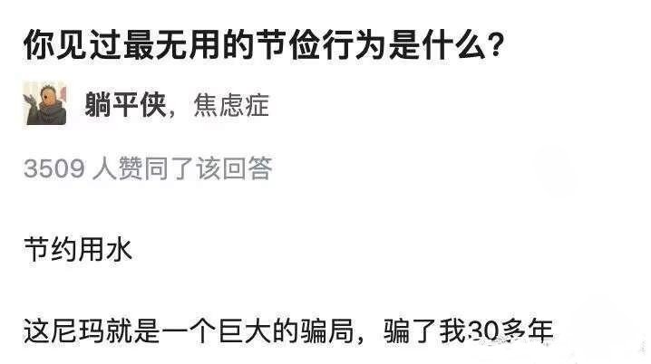

氫氣球
@allnightforlive
@jianlvya 不完全是 重點是你不節省 好水跟髒水就會都歸為髒水 而清理循環的作用才是最廢錢的
就好比掉土裡的果凍你不會拿起來直接吃，至少可能會再洗一下再吃，但這個動作需要花費時間，而你當下不吃那一口就會餓到暴斃。
把時間軸拉長當成年份和水循環應該可以理解？

繁律
@jianlvya
节约用水为啥是最大的骗局？？ https://t.co/UYvTbsKamJ